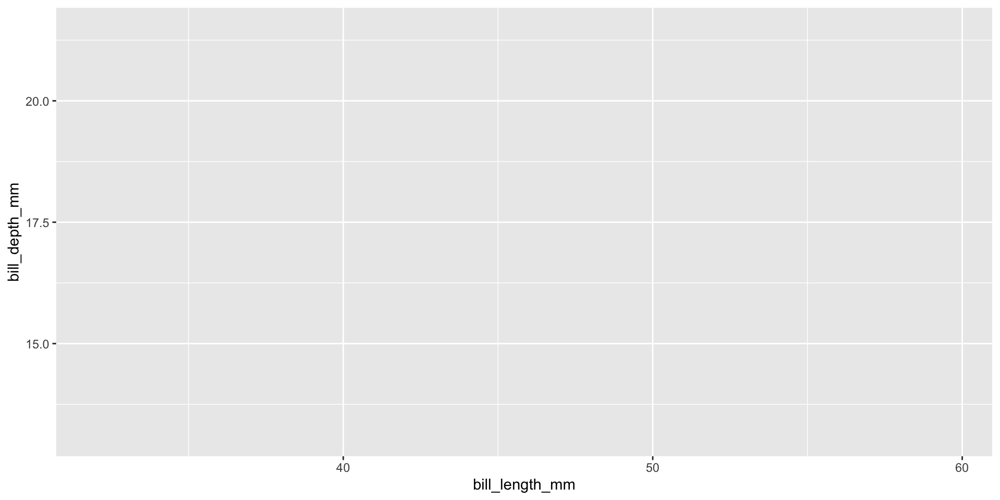
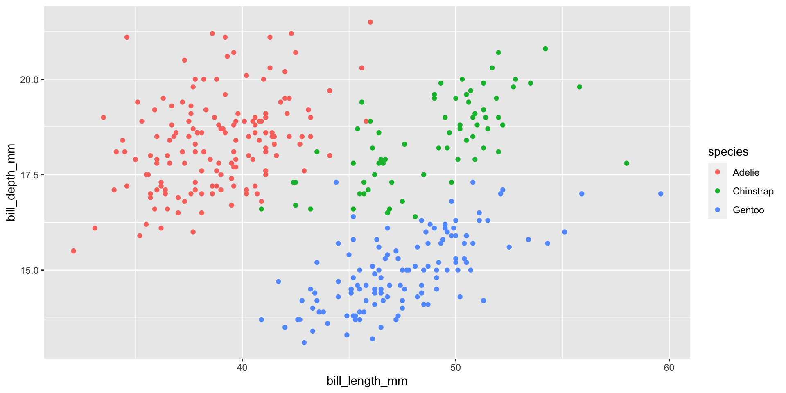
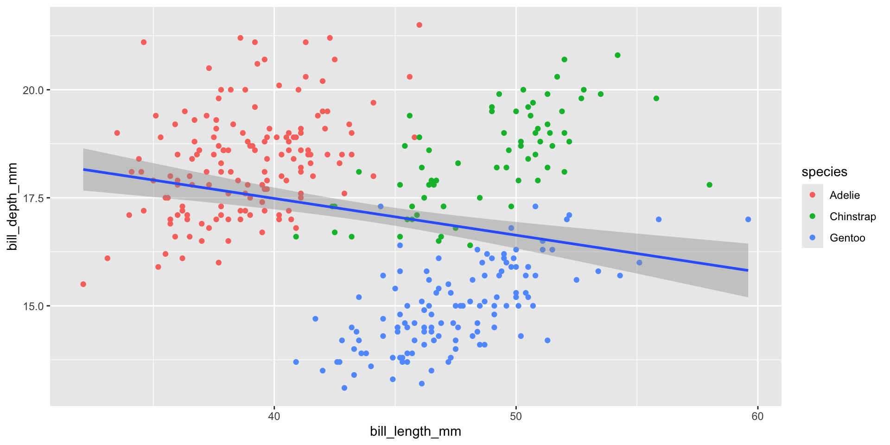
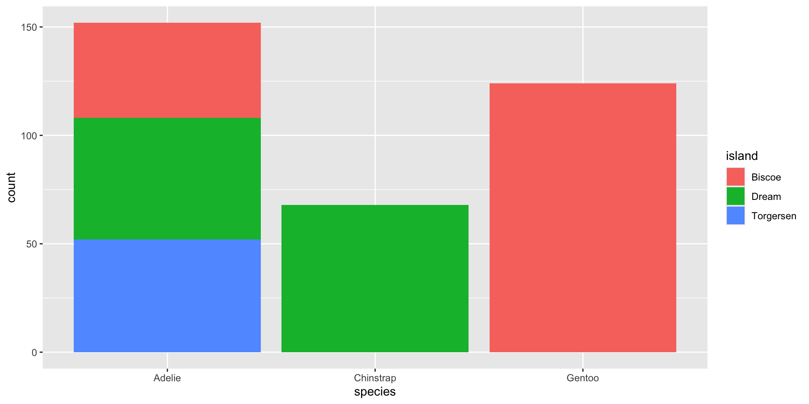
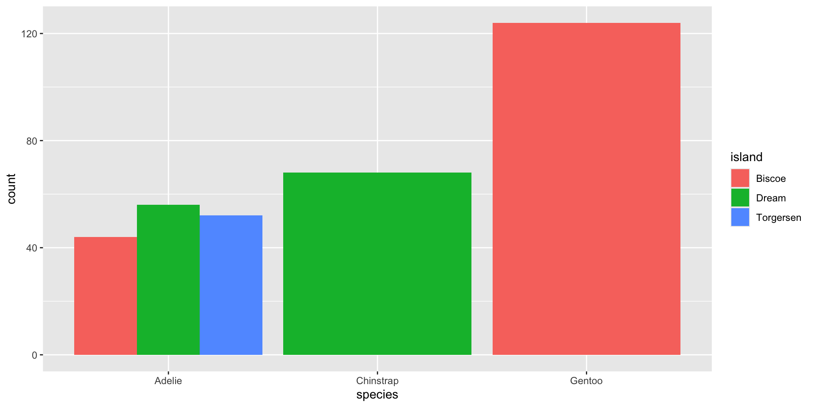
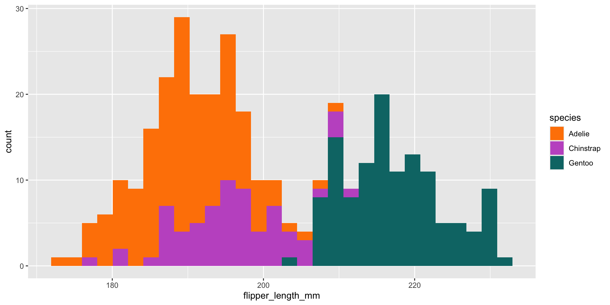
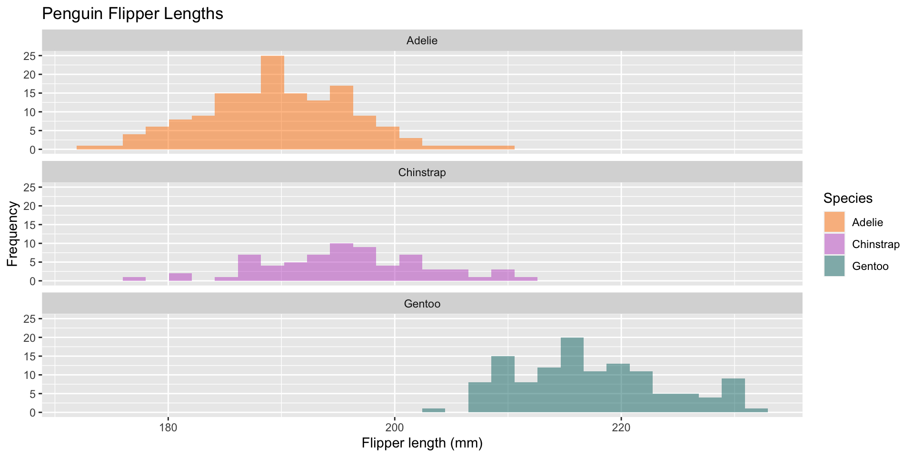

“A grammar of graphics is a tool that enables us to concisely describe the components of a graphic. Such a grammar allows us to move beyond named graphics (e.g. the “scatterplot”) and gain insight into the deep structure that underlies statistical graphics.”
-from Hadley Wickham’s A layered grammar of graphics in Journal of Computational and Graphical Statistics, vol. 19, no. 1 pp. 3-28, 2010.
“In the grammar of a language, words have different parts of speech, which perform different roles in the sentence. Analagously, the grammar of graphics separates a graphic into different layers”
1. data – in tidy format + define aesthetics (how variables map onto a plot e.g. axes, shape, color, size) 2. geometric objects (aka geoms) – define the type of plot(s)
Then these:
3. statistical transformations – algorithm used to calculate new values for a graph 4. position adjustments – control the fine details of position when geoms might otherwise overlap 5. coordinate system – change what x and y axes mean (e.g. Cartesian (default), polar, flipped) 6. facet – create subplots that each display one subset of the data
Enhance communication using additional layers
1. labels – add / update titles, axis / legend labels 2. annotations – add textual labels (e.g. to highlight specific data points or trend lines, etc.) 3. scales – update how the aesthetic mappings manifest visually (e.g. colors scales, axis ticks, legends) 4. themes – customize the non-data elements of your plot 5. layout – combine multiple plots into the same graphic
The {tidyverse} is an “opinionated” set of packages – meaning they share similar philosophies, grammar, and data structures – that are incredibly useful for data wrangling, cleaning, and manipulation (and of course, visualization).
Check out the tidyverse website to learn more about each of these packages
We’ll start by exploring the relationship between penguin bill length and bill depth. For this example, we’ll focus on understanding the following layers of a ggplot (bolded):
Graphic layers:
1. data – in tidy format + define aesthetics (how variables map onto a plot e.g. axes, shape, color, size) 2. geometric objects (aka geoms) – define the type of plot(s) 3. statistical transformations – algorithm used to calculate new values for a graph 4. position adjustments – control the fine details of position when geoms might otherwise overlap 5. coordinate system – change what x and y axes mean (e.g. Cartesian (default), polar, flipped) 6. facet – create subplots that each display one subset of the data
“Enhancing communication” layers:
1. labels – add / update titles, axis / legend labels 2. annotations – add textual labels (e.g. to highlight specific data points or trend lines, etc.) 3. scales – update how the aesthetic mappings manifest visually (e.g. colors scales, axis ticks, legends) 4. themes– customize the non-data elements of your plot 5. layout – combine multiple plots into the same graphic
Initialize a plot object
Initialize your plot object using ggplot() – this creates a graph that’s primed to display the penguins data set, but empty since we haven’t told ggplot how to map our data onto the graph yet (in other words: we haven’t told ggplot what type of plot to create):
The mapping argument defines how variables in your data set are mapped to visual properties (aesthetics) of your plot. Here, we specify which variables map to our x and y axes:
library(palmerpenguins)library(tidyverse)ggplot(data = penguins, mapping =aes(x = bill_length_mm, y = bill_depth_mm))
Omitting argument names
The data and mapping arguments are often not explicitly written in ggplot(), as in the example below (makes for more concise code):
library(palmerpenguins)library(tidyverse)ggplot(penguins, aes(x = bill_length_mm, y = bill_depth_mm))
Define a geom to represent data
Next, we’ll layer on a geometric object (aka geom) that our plot will use to represent our penguin data. There are many geoms (geom_*()) that are built into {ggplot2} already (and more when you use extension packages). To create a scatterplot:
library(palmerpenguins)library(tidyverse)ggplot(penguins, aes(x = bill_length_mm, y = bill_depth_mm)) +geom_point()

Defining data & mappings in geom_*()
You can also define the data and mapping layers within a geom_*() (rather than ggplot()) – this is helpful if you plan to have multiple geoms with different mappings:
If we’d like to represent species using another aesthetic (e.g. color, shape, size), we need to modify our plot’s aesthetic (i.e. inside aes()) – any time we want to modify the appearance of our plotted data based on a variable in our dataset, we do so within aes(). This process is known as scaling. A legend will automatically be added to indicate which values (in this case, colors) correspond to which level of our variable (in this case, species):
library(palmerpenguins)library(tidyverse)ggplot(penguins, aes(x = bill_length_mm, y = bill_depth_mm, color = species)) +geom_point()
Mapping color at a local level
Alternatively, map color at a local (i.e. within a specific geom) rather than global (i.e. within ggplot()) layer:
Here, we use geom_smooth() to add a best fit line (based on a linear model, using method = "lm") to our plot:
Global mappings are passed down to each subsequent geom layer. Therefore, the color = species mapping is also passed to geom_smooth(), resulting in a best fit line for each species.
library(palmerpenguins)library(tidyverse)ggplot(penguins, aes(x = bill_length_mm, y = bill_depth_mm, color = species)) +geom_point() +geom_smooth(method ="lm")

Local mappings (e.g. within geom_point()) only apply to that particular layer. Therefore, the color = species mapping is only applied to geom_point(), and geom_smooth() fits a best fit line to the entire data set.
What if we just want to color all points the same?
Do so within the corresponding geom_*() and outside of the aes() function! Color is no longer being mapped to a variable.
library(palmerpenguins)library(tidyverse)ggplot(penguins, aes(x = bill_length_mm, y = bill_depth_mm)) +geom_point(color ="blue")

We can also map our own colors
Here, we use scale_color_manual() to update the colors of our data points. Colors will be mapped from the levels in our data (i.e. Adelie, Chinstrap, Gentoo) to the order of the aethetic values supplied ("#FF8302", "#C35CCA", "#067575"):
library(palmerpenguins)library(tidyverse)ggplot(penguins, aes(x = bill_length_mm, y = bill_depth_mm, color = species)) +geom_point() +scale_color_manual(values =c("#FF8302", "#C35CCA", "#067575"))
Use color to describe a continuous variable
In the previous example, we mapped color to a categorical variable (species). We can also map color to continuous variables (e.g. body_mass_g):
library(palmerpenguins)library(tidyverse)ggplot(penguins, aes(x = flipper_length_mm, y = body_mass_g, color = body_mass_g)) +geom_point() +scale_color_gradient(low ="#132B43", high ="#F7DD4C")
Plot #2
In this next example, we’ll explore penguin species counts. For this example, we’ll focus on understanding the following layers of a ggplot (bolded):
Graphic layers:
1. data – in tidy format + define aesthetics (how variables map onto a plot e.g. axes, shape, color, size) 2. geometric objects (aka geoms) – define the type of plot(s) 3. statistical transformations – algorithm used to calculate new values for a graph 4. position adjustments – control the fine details of position when geoms might otherwise overlap 5. coordinate system – change what x and y axes mean (e.g. Cartesian (default), polar, flipped) 6. facet – create subplots that each display one subset of the data
“Enhancing communication” layers:
1. labels – add / update titles, axis / legend labels 2. annotations – add textual labels (e.g. to highlight specific data points or trend lines, etc.) 3. scales – update how the aesthetic mappings manifest visually (e.g. colors scales, axis ticks, legends) 4. themes– customize the non-data elements of your plot 5. layout – combine multiple plots into the same graphic
Initialize + map aesthetics + define geom
Similar to our first scatterplot, we start by initializing our plot object with data, mapping our aesthetics, and defining a geometric object:
Some geoms, like scatterplots, plot the raw values of your data set. Other geoms, like bar charts, histograms, boxplots, smoothers, etc. calculate new values to plot.
Each point on our scatterplot represents a raw observation value (one point = one penguin)
library(palmerpenguins)library(tidyverse)ggplot(penguins, aes(x = flipper_length_mm, y = body_mass_g, color = species)) +geom_point()
Each bar represents a species count (note the y-axis, count, which is not a variable in our penguins data set)
Every geom has a default stat – meaning you can typically use geoms without worrying about the underlying statistical transformation.
The default statistical transformation used in geom_bar() is count, which first groups our categorical variable (species), then calculates a count for each unique level (Adelie, Chinstrap, Gentoo).
library(palmerpenguins)library(tidyverse)ggplot(penguins, aes(x = species)) +geom_bar(stat ="count") # you don't need to explicitly include `stat = "count"` since it's the default
We can override the default stat
Let’s say we have a data frame with calculated count values (e.g. penguins_summary) that we’d like to plot using geom_bar(). We can change stat = "count" (default) to stat = "identity" to generate bar heights based off the “identity” of values in the n column of penguin_summary.
library(palmerpenguins)library(tidyverse)penguin_summary <- penguins |>count(species) # calculate number of observations (rows) for each speciesggplot(penguin_summary, aes(x = species, y = n)) +geom_bar(stat ="identity")
We can override the default stat mapping
Now let’s say we’d like to display the same bar chart with y-axis values as proportions, rather than counts. We can override the default mapping from transformed variables to aesthetics by doing the following:
library(palmerpenguins)library(tidyverse)ggplot(penguins, aes(x = species, y =after_stat(prop), group =1)) +geom_bar()
NOTE: Including group = 1 overrides the default behavior of geom_bar() to group by the x variable. The default behavior of geom_bar() is to group by the x variable (for us, that’s species) to separately count the number of rows in each level (Adelie, Chinstrap, Gentoo). If we want proportions, we need to consider all levels of species together to calculate the proportion of each level of species relative to all levels of species.
We can use stat_summary() to compute & plot any aggregate
Here, we plot the min, mean, and max values of penguin body_mass_g by species:
library(palmerpenguins)library(tidyverse)ggplot(penguins) +stat_summary(aes(x = species, y = body_mass_g),fun.max = max, fun.min = min,fun = mean )
What is a position adjustment?
Position adjustments apply minor tweaks to the position of elements to resolve overlapping geoms. For example, let’s say we would like to visualize penguin counts by species (bar height) and by island (color) using our bar chart from earlier. We could add the fill aesthetic:
library(palmerpenguins)library(tidyverse)ggplot(penguins, aes(x = species, fill = island)) +geom_bar()
The default position for geom_bar() is “stack”
Every geom has a default position. The default position used in geom_bar() is stack, which stacks bars on top of one another, based on the fill value (here, that’s island):
library(palmerpenguins)library(tidyverse)ggplot(penguins, aes(x = species, fill = island)) +geom_bar(position ="stack") # you don't need to explicitly include `position = "stack"` since it's the default

Alternative position adjustments for geom_bar()
Below are a few position options available for use with geom_bar():
position = "fill" creates a set of stacked bars but makes each set the same height (easier to compare proportions across groups)
library(palmerpenguins)library(tidyverse)ggplot(penguins, aes(x = species, fill = island)) +geom_bar(position ="fill")
position = "dodge" places overlapping bars directly beside one another (easier to compare individual values)
library(palmerpenguins)library(tidyverse)ggplot(penguins, aes(x = species, fill = island)) +geom_bar(position ="dodge")
What is a coordinate system?
A Coordinate System is a system that uses one or more numbers (coordinates), to uniquely determine the position of points or other geometric elements. By default, ggplots are constructed in a Cartesian coordinate system, consisting of a horizontal x-axis and vertical y-axis.
library(palmerpenguins)library(tidyverse)ggplot(penguins, aes(x = species)) +geom_bar() +coord_cartesian() # you don't need to explicitly include `coord_cartesian()` since it's the default

Changing coordinate systems
Depending on the type of data, axis label length, etc. it may make sense to change this coordinate system. Two options for our bar plot:
In this next example, we’ll explore penguin flipper lengths. For this example, we’ll focus on understanding the following layers of a ggplot (bolded):
Graphic layers:
1. data – in tidy format + define aesthetics (how variables map onto a plot e.g. axes, shape, color, size) 2. geometric objects (aka geoms) – define the type of plot(s) 3. statistical transformations – algorithm used to calculate new values for a graph 4. position adjustments – control the fine details of position when geoms might otherwise overlap 5. coordinate system – change what x and y axes mean (e.g. Cartesian (default), polar, flipped) 6. facet – create subplots that each display one subset of the data
“Enhancing communication” layers:
1. labels – add / update titles, axis / legend labels 2. annotations – add textual labels (e.g. to highlight specific data points or trend lines, etc.) 3. scales – update how the aesthetic mappings manifest visually (e.g. colors scales, axis ticks, legends) 4. themes– customize the non-data elements of your plot 5. layout – combine multiple plots into the same graphic
Initialize + map aesthetics + define geom
We’ll again start by initializing our plot object with data, mapping our aesthetics, and defining a geometric object. Note that the default statistical transformation for geom_histogram() is stat = "bin":
Just like in our scatterplot (Plot #1), we’ll modify our plot’s aesthetics (i.e. inside aes()) to color our histrogram bins according to the species variable. Unlike our scatterplot (which uses the color argument), we’ll use the fill argument to fill the bars with color (rather than outline them with color). We’ll also manually define our fill scale:
Let’s update the position of our binned bars from "stack" to "identity" and also increase the transparency (using alpha) so that we can see overlapping bars:
Update axis and legend titles and add a plot title using labs():
library(palmerpenguins)library(tidyverse)ggplot(penguins, aes(x = flipper_length_mm, fill = species)) +geom_histogram(position ="identity", alpha =0.5) +scale_fill_manual(values =c("#FF8302", "#C35CCA", "#067575")) +labs(x ="Flipper length (mm)", y ="Frequency", fill ="Species",title ="Penguin Flipper Lengths")

Create subplots using facets
Sometimes (particularly during the data exploration phase) it’s helpful to create subplots (i.e. separate panels) of your data. Here we use facet_wrap() to separate our data by the species variable. By default, it creates a 1 x 3 matrix of plots. We can manually specify how many rows or columns we’d like using nrow or ncol:
library(palmerpenguins)library(tidyverse)ggplot(penguins, aes(x = flipper_length_mm, fill = species)) +geom_histogram(position ="identity", alpha =0.5) +scale_fill_manual(values =c("#FF8302", "#C35CCA", "#067575")) +labs(x ="Flipper length (mm)", y ="Frequency", fill ="Species",title ="Penguin Flipper Lengths") +facet_wrap(~species, ncol =1)

See you next week!
~ This is the end of Lesson 3 (of 3) ~
Assignments
End-of-class Survey #1 (EOC #1) – Due Mon 01/08 at 11:55pm
2 multiple choice
2 short answer
1 optional question
Pre-course Reflection (SR #1) – Due Sat 01/13 at 11:59pm
3 sets of questions about:
school & life
the way you learn best
some fun stuff
Homework Assignment #1 (HW #1) – Sat 01/20 at 11:59pm
2 parts:
interpreting & annotating ggplot code
finding data that you’re interested in visualizing for your final assignment


![There are two sets of anthropomorphized data tables. The top group of three tables are all rectangular and smiling, with a shared speech bubble reading 'our columns are variables and our rows are observations!'. Text to the left of that group reads 'The standard structure of tidy data means that 'tidy datasets are all alike…' The lower group of four tables are all different shapes, look ragged and concerned, and have different speech bubbles reading (from left to right) “my column are values and my rows are variables”, 'I have variables in columns AND in rows', 'I have multiple variables in a single column', and 'I don’t even KNOW what my deal is.' Next to the frazzled data tables is text '...but every messy dataset is messy in its own way. -Hadley Wickham.'](images/week1/horst-untidy-data.png)
![On the left is a happy cute fuzzy monster holding a rectangular data frame with a tool that fits the data frame shape. On the workbench behind the monster are other data frames of similar rectangular shape, and neatly arranged tools that also look like they would fit those data frames. The workbench looks uncluttered and tidy. The text above the tidy workbench reads 'When working with tidy data, we can use the same tools in similar ways for different datasets…' On the right is a cute monster looking very frustrated, using duct tape and other tools to haphazardly tie data tables together, each in a different way. The monster is in front of a messy, cluttered workbench. The text above the frustrated monster reads '...but working with untidy data often means reinventing the wheel with one-time approaches that are hard to iterate or reuse.'](images/week1/horst-workbench.png)